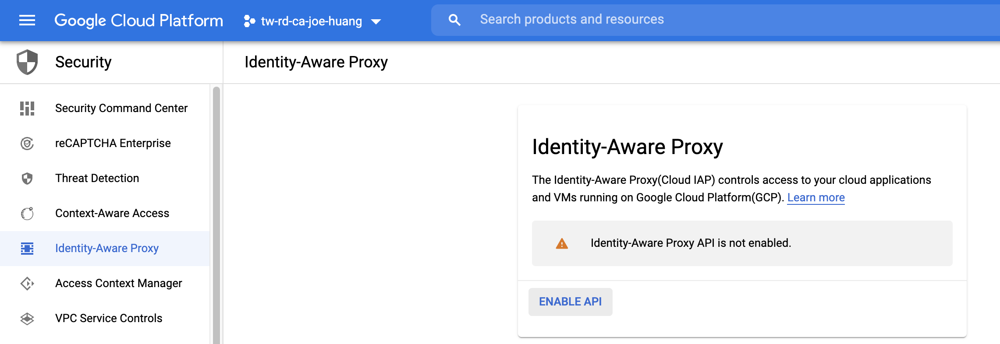
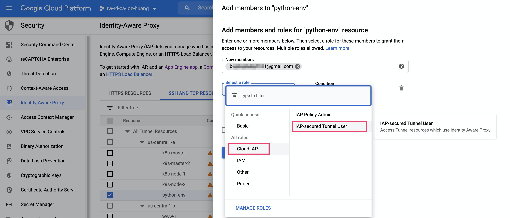
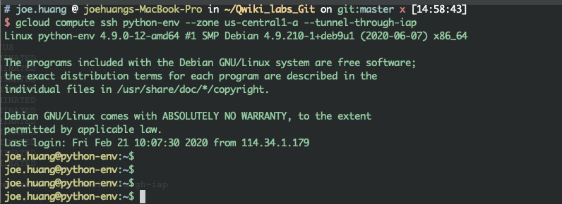
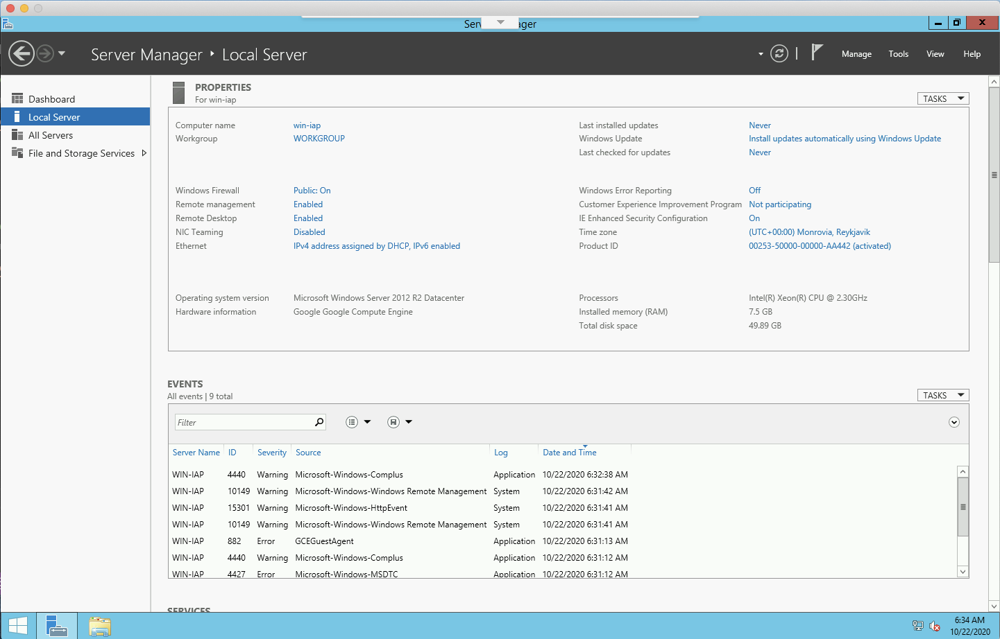

今天Cloud IAP的分享，它的應用很廣泛，我將分享應用在linux, windwos伺服器存取的保謢，以及網頁(ednpoint)存取的保護。IAP手法很多，常用的連線IAP認證(--tunnel-through-iap); Port轉換)start-iap-tunnel)，最後GAE網頁，則是使用IAP-secured Web App，最後也交叉設定OAuth consent screen，使保護更佳彈性。
前言
很多的情況下，User需要從外部(非公司內網)連線到你的伺服器或是網頁，傳統的解決方案，你會透過VPN, VDI方式連線到你指定的伺服器，這些方法還需多餘的人力去維護，有沒有一個方法可以減少管理人員的負控，又可以快速讓外部使用者，可以方便且安全經過認證連線至內部服務器呢？
現在提倡所謂的Zero Trust Network ，是提供模組化、具有成本效益的作法，採取網路分隔的方式來保護重要的資產。
Cloud IAP (Identity-Aware Proxy) 是 GCP 上的一個服務，可以利用身分資訊和背景資訊(context)，為 GCP 上執行的雲端應用程式和 VM 提供存取防護。Cloud IAP 會驗證使用者身分和要求內容，判斷是否應將應用程式或 VM 存取權授予某位使用者。另外，Cloud IAP 可以使用 TCP 轉送功能(TCP forwarding)，能保護您託管給 GCP 的 VM 執行個體的 SSH 和 RDP 存取權限，您不必為 VM 執行個體設定公開 IP 位址。
以往跳板機存有許多風險，除了單點失效之外，跳板機這台主機的資安風險也需要考慮在內。IAP 提供的 TCP Forwarding 功能可以改善跳板機的缺點，參考上圖的架構，透過 Google 帳號建立安全連線存取 Compute Engine 中的虛擬機器。
IAP 設定
step1. Enable IAP
- 前往 「Security」->「Identity-Aware Proxy」，選擇「SSH 和 TCP 資源」可以看到下圖畫面。這裡會列出目前專案中的所有 GCE 資源。您可以選擇開啟或關閉（預設為關閉）單台或單區域以及所有 GCE 資源對應的 IAP 功能。
Security」-Identity-Aware Proxy
- 請點選 Enable API

確認 API Running後，才可以進行IAP的設定
step2. Choose specific VM
- 請至
(2)SSH and TCP RESOURCES - 選擇欲開啟
IAP保護的VM
範例：選擇python-env
step3. Allow USER for IAP Tunnel
- 此步驟是指定user可以遊走在 IAP Tunnel(Google 管理的)
- 接著將某個
user加入允許透過 IAP Tunnel 連線到這個主機，點選「ADD MEMBER」，出現下圖畫面

step4. 確認完成加入IAP Role
可以將任何一個 Google 帳號（Gmail, GSuite, Cloud Identity）新增成為成員
也可以新增一個群組帳號，存取權限將會對應到群組內的成員
Role請選擇「IAP-secured Tunnel User」
step5. 建立 firewall for IAP Tunnel
- 新增Member & Role後，下一步是要設定防火牆規則
- 需要設定允許來源網段
35.235.240.0/20作為 IAP TCP 轉送的允入規則，
允許 IAP 從這個網段連接到你的主機，設定畫面如下
請注意預設的 default-allow-ssh 跟 default-allow-rdp 允許來自所有來源的主機連線到 port 22 與 3389。你可以視情況調整這兩個規則，讓主機只允許來自 IAP 的連線。
設定IAP過程中，若沒有開啟IAP Tunnel 防火牆，GCP會提示建立它
建立 IAP Tunnel 專用防火牆
step1. 設定
路徑：「Networking」 → 「VPC network」→ 「Firewall」→ 上方點選「Create Firewall Rule」
防火牆設定：
Targets: All instances in the networkSource IP range: 依照google 指定的rangeProtocols and ports: 22 port
step2. Check policy
- 設定完成後，畫面如下
step3. SSH VM with IAP Tuneel
- 驗證時，可以關掉
public IP, 直接透過IAP 方法來驗證
1 | # gcloud compute ssh |
2 | # --tunnel-through-iap |
3 | |
4 | gcloud compute ssh python-env --zone us-central1-a --tunnel-through-iap |
即使沒有公開的IP，透過–tunnel-through-iap 依然可以正常連線到我的VM

Windows RDP Port-Forwarding
在開始之前我們先用public IP連入 VM，之後關閉public IP，我們透過poty-forwading 產生使得雲上VM 3389 port 轉接到地端的8080 port
step1. 透過公開IP 連線 Windows
- 本驗證是用
public IP登入系統 - 透過Chrome RDP自動帶入public IP
測試可以正常登入windows

step2. IAP to localhost:8080 (本機登入)
start-iap-tunnel: 透過此指令產生tcp-forwarding- 測試時，此時請至本機電腦上運行
1 | # start-iap-tunnel |
2 | gcloud beta compute start-iap-tunnel win-iap 3389 --local-host-port=localhost:8080 --zone us-central1-a |
- 執行 IAP port-forwarding成功
- 我們把GCP 上面VM
3389 port，轉接到本機端的8080 port
step3. RDP 連線localhost
- 此時連線非之前的
public IP，而是localhost:8080，
step4. localhost:8080
測試可以正常連線且登入windows
- 可以看到視窗最上方有顯示
localhost:8080
Reference
[1] Cloud IAP for TCP forwarding
https://cloud.google.com/iap/docs/tcp-forwarding-overview?hl=zh-tw
[2] Known limitations
https://cloud.google.com/iap/docs/using-tcp-forwarding?hl=zh-tw#known_limitations
[GCP] 你還在用VPN連線嗎？ 快點試試Cloud IAP，資安手法大開公 | Giving it a Try to let Cloud IAP protect your system (上)